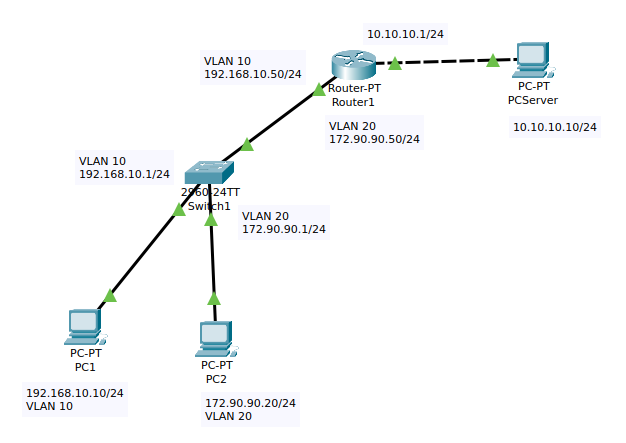

En esta practica he tenido que configurar el entorno que podeis ver, usando VLANs distintas para el PC1 y PC2 usando los puertos necesarios.
Configurar el router para que finalmente los tres PCs se puedan ver gracias a las rutas de enrrutamiento.
